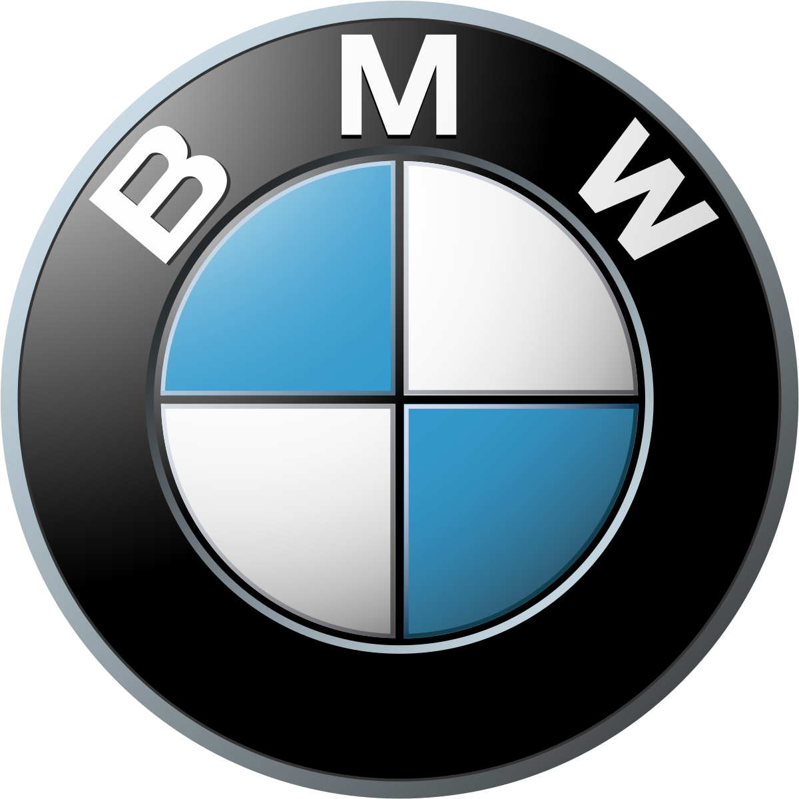
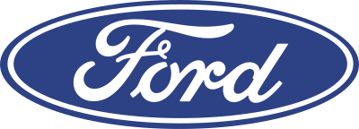
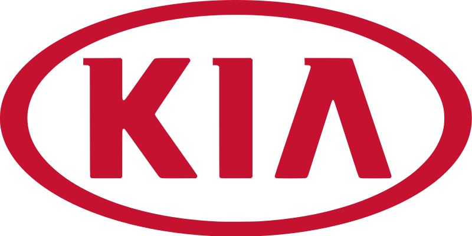
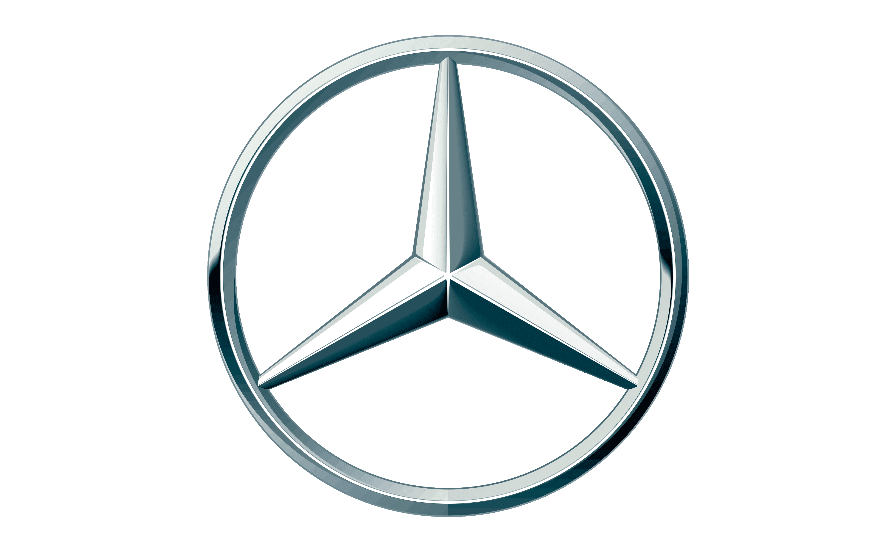

|
Audi — немецкая автомобилестроительная компания в составе концерна Volkswagen Group, специализирующаяся на выпуске автомобилей под
маркой Audi. Штаб-квартира расположена в городе Ингольштадт (Германия). Девиз — Vorsprung durch Technik (с нем. — «Прогресс через технологии»).
Объём производства в 2016 году составил около 1 903 259 автомобилей. Audi в нынешнем виде является наследником концерна Auto Union, образованного
в результате объединения четырёх компаний, выпускавших автомобили и мотоциклы под марками DKW, Horch, Audi и Wanderer. Вследствие преобразований
была оставлена лишь торговая марка Audi. Первый автомобиль марки Wanderer появился в 1913 г., первое собственное предприятие (Horch & Co.)
Август Хорьх организовал в 1899 году, а после того, как кредиторы отстранили его от дел, в 1909 году была организована компания Audi Automobil-Werke,
что переводится как «Автомобильный завод Ауди». А в 1910 г. был выпущен первый автомобиль.
|
|
|
BMW — немецкий производитель автомобилей, мотоциклов, двигателей, а также велосипедов. Председателем компании с 2006 по 2015 год был Норберт Райтхофер, с мая 2015 года — Харальд Крюгер, а
с 18 июля 2019 года — Оливер Ципсе. Главный дизайнер — Йозеф Кабан. Девиз компании — «Freude am Fahren», с нем. — «С удовольствием за рулём».
Для англоязычных стран был придуман также девиз «The Ultimate Driving Machine» (с англ. — «Идеальная машина для вождения»).
В 1919 году Франц Димер установил первый мировой рекорд BMW, поднявшись на высоту 9760 метров на аэроплане с двигателем BMW. После Первой мировой
войны по условиям Версальского мирного договора 1919 года было запрещено производство самолётов в Германии, вследствие чего Густав Отто закрыл
свою фабрику, а BMW перешла на производство сельскохозяйственной техники, предметов домашнего обихода и тормозов для поездов.
|
 |
|
|  |
Ford — американская автомобилестроительная компания, производитель автомобилей под маркой Ford. Четвёртый в мире производитель автомобилей
по объёму выпуска за весь период существования; в настоящее время — третий на рынке США после GM и Toyota, и второй в Европе после Volkswagen.
Занимает девятое место в списке крупнейших публичных компаний США Fortune 500 по состоянию на 2015 год и 27 место в списке крупнейших мировых
корпораций Global 500 2015 года. Штаб-квартира компании располагается в городе Дирборн в пригороде Детройта в штате Мичиган. Около пятой части
доходов от продаж продукции и предоставляемых услуг составляет федеральный клиентский сектор обслуживания военных заказов (без учёта иностранных
заказчиков американского вооружения и военной техники).
|
|
|
Honda — японская публичная многонациональная корпорация, основанная в 1948 году изобретателем и предпринимателем Соитиро Хондой и финансистом
Такэо Фудзисавой, известная прежде всего как производитель автомобилей, мотоциклов и силового оборудования. Honda является крупнейшим производителем
мотоциклов в мире с 1959 года, достигнув 400 миллионов произведённых мотоциклов к концу 2019, а также крупнейший в мире производитель
двигателей внутреннего сгорания, производящий более 14 миллионов двигателей внутреннего сгорания ежегодно. В 2001 году Honda стала вторым по
величине японским производителем автомобилей. В 2015 году Honda была восьмым по величине производителем автомобилей в мире.
|
 |
|
 |
Hyundai — корейский чеболь (конгломерат), основанный Чон Чжу-ёном. После Азиатского финансового кризиса компания передала в особые подразделения
большинство видов бизнеса, в том числе: «Hyundai Motor Group», «Hyundai Department Store Group» и «Hyundai Heavy Industries Group». Название «Hyundai»
происходит от синокорейского слова 現代, что означает «современность».
Первая компания группы была основана в 1947 году как авторемонтная мастерская.
Впоследствии она стала инженерно-строительной компанией. Чон Чжу-ён и члены его семьи начали заниматься и другими видами деятельности, расширив влияние
на другие отрасли промышленности. В итоге, появился самый крупный в Корее чеболь.
|
|
|
Kia Motors Corporation — южнокорейская автомобилестроительная компания, второй автопроизводитель в Республике Корея и седьмой в мире, основана
в декабре 1944 года. Входит в группу компаний Hyundai Motor Group. В 2016 году в мире было продано 3 007 976 автомобилей. Официальный слоган
компании — «The Power to Surprise» («Искусство удивлять»). Название KIA расшифровывается как «Выйти из Азии в весь мир» («Войти в мир из Азии»).
Основана в декабре 1944 года, входила в группу (чеболь) Kia Group, из которого была выделена в 2003 году. Первоначально компания называлась
KyungSung Precision Industry, и только в 1951 году получила наименование KIA Industries. Основным направлением деятельности было создание
индивидуальных средств передвижения — велосипедов и мотоциклов. Выпуск грузовых и легковых машин был налажен только в 1970-х годах. Миллионный
автомобиль сошёл с конвейера в 1988 году. В 1990 году компания получила новое название — KIA Motors Inc.
|
 |
|
|  |
Mercedes-Benz — торговая марка и одноимённая компания — производитель легковых автомобилей премиального класса, грузовых автомобилей, автобусов и других
транспортных средств, входящая в состав немецкого концерна «Daimler AG». Является одним из самых узнаваемых автомобильных брендов во всём мире.
Штаб-квартира Mercedes-Benz находится в Штутгарте, Баден-Вюртемберг, Германия.
Наименование торговой марки было принято в 1926 году в результате слияния двух конкурирующих фирм, Benz & Cie. (основана Карлом Бенцем) и
Daimler-Motoren-Gesellschaft (основана Готлибом Даймлером), в единый концерн — Daimler-Benz. Название бренда образовано от двух наиболее значимых
автомобилей объединённых компаний — Mercedes 1901 года и Benz Patent-Motorwagen 1886 года.
|
|
|
Mazda Motor Corporation — японская автомобилестроительная компания, выпускающая автомобили «Мазда». Штаб-квартира расположена в посёлке Футю,
уезд Аки, префектура Хиросима, Япония. Входит в кэйрэцу Sumitomo. В 2015 году стала пятнадцатым автопроизводителем в мире по объёму производства
автомобилей. В 1920 году совместно с группой инвесторов обанкротившуюся строительную компанию Abemaki приобрёл сын простого рыбака, Дзюдзиро Мацуда
(яп. 松田 重次郎 Мацуда Дзю:дзиро:, 1875—1952). Основной продукцией предприятия стали изделия из пробкового дерева, компанию назвали Toyo Cork Kogyo Ltd.,
и в 1921 году Мацуда стал её президентом. В 1920-х годах предприятие выпустило несколько пробных партий мотоциклов, не пользовавшихся большой популярностью
на рынке, а основной продукцией стало машиностроительное оборудование.
|
 |
|
 |
Toyota Motor Corporation — крупнейшая японская автомобилестроительная корпорация, также предоставляющая финансовые услуги и имеющая несколько дополнительных
направлений в бизнесе. Является крупнейшей автомобилестроительной публичной компанией в мире, а также крупнейшей публичной компанией в Японии.
Главный офис компании находится в городе Тоёта, префектура Айти, Япония. Компания занимает 6 место в Fortune Global 500.
В 1924 году Сакити Тоёда изобрел автоматический ткацкий станок Тойода модель G. Принцип дзидока, означающий, что машина останавливается сама, когда возникает проблема,
стал позже частью производственной системы Тойоты. Ткацкие станки собирались на небольшой производственной линии. В 1929 году патент на автоматический ткацкий станок
был продан британской компании, полученная от продажи сумма стала стартовым капиталом для развития автомобильного производства.
|